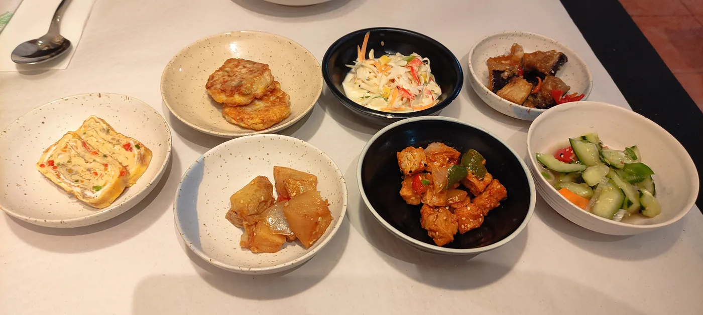
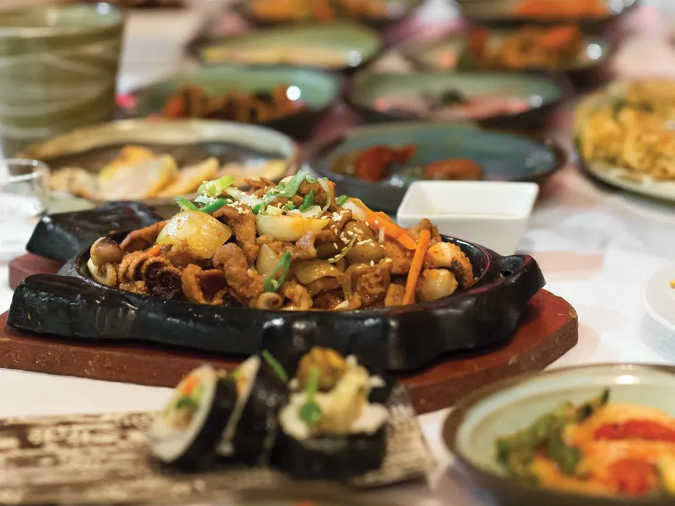

Un rincón de Seúl en Rocafort.
Cocina coreana familiar servida en cerámica hecha a mano por el propio chef-ceramista en el taller de la planta baja. Bibimbap en cuenco al rojo vivo, banchan de ocho a diez tapas, pajeon recién hecho. Carta corta, sabor honesto.

Cada plato sale del torno de la casa.
Bajo el comedor hay un taller de cerámica. El chef-ceramista trabaja las piezas, las cuece, las esmalta, y luego las usa para servir tu comida. Lo que llega a la mesa, también puedes comprártelo.
«Al entrar parece más una tienda que un restaurante. Estanterías llenas de cerámica artesanal hacen de antesala. Subiendo escaleras, un comedor pequeño y cálido lleno cada noche.»
Cuencos, platos de banchan, dolsot para bibimbap: todo está hecho a mano en el local. El cliente come en piezas únicas que no se repiten ni en color ni en forma.

Entre ocho y diez tapas pequeñas cambian con la temporada: kimchi de col, pepino picante, tortilla coreana, raíz de loto, brotes de soja. Todas hechas en casa. Todas reposicionables si pides más arroz.
Lo que llega en cerámica.
Fotos reales de la mesa. Cada cuenco es una pieza única salida del taller del chef.
Carrer de Rocafort, 204
- Lunes13:30 – 16:00 · 19:30 – 22:30
- Martes13:30 – 16:00 · 19:30 – 22:30
- Miércoles13:30 – 16:00 · 19:30 – 22:30
- Jueves19:30 – 22:30
- Viernes13:30 – 16:00 · 19:30 – 22:30
- Sábado13:30 – 16:00 · 19:30 – 22:30
- DomingoCerrado
08029 Barcelona · L'Eixample · metro Entença L5